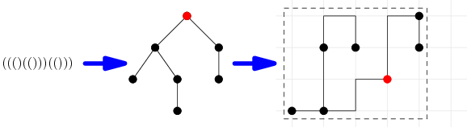

Little Gordon enjoys nature and especially trees. He would like to sketch some of his most favourite ones. However, it seems that he doesn’t have enough grid paper – and that’s where your help is needed…
Problem specification
You are given a rooted binary tree and a number K. Pick a rectangle on the grid with sides parallel to the coordinate axes. The chosen rectangle may contain at most K grid points (including those on its perimeter). Draw the tree into the rectangle.
You have to place each node onto one of the grid points in your chosen rectangle. Different nodes must be placed onto different points. You then have to draw each of the edges. Each edge must be drawn as a polyline that lies entirely on the grid and does not exit the rectangle. No two edges may share a common point other than an endpoint they have in common.

Input specification
The first line of the input file contains an integer T specifying the number of test cases. Each test case is preceded by a blank line.
Each test case consists of two lines. The first one contains the integer K, the second one a string of parentheses that encodes the tree.
An empty tree is encoded as an empty string. A tree consisting of a root node and its two subtrees is denoted (LR), where L and R are the codes of those two subtrees. Note that a leaf has two empty subtrees, hence each leaf is denoted by the string ().
The trees in the hard data set are identical to those in the easy data set. The data sets differ only in the amount of grid points you can use (the number K).
Output specification
For each test case output a single line with two integers r and c: the number of rows and the number of columns of grid points your chosen rectangle contains. Note that rc must not exceed K.
Afterwards, output 2r − 1 rows, each containing 2c − 1 characters: an ASCII art drawing of the tree. In the drawing, grid points correspond to characters whose both coordinates are even (indexed from 0).
The root node should be marked as H. For each other vertex: if it is the first child of its parent, label it L, otherwise label it R. The edges are drawn using -, | and + symbols (ASCII 45, 124, and 43; follow the example output). All the remaining characters should be . (ASCII 46).
Any valid drawing will be accepted.
Example
In the second test case the chosen rectangle contains 20 grid points, which is less than the limit (which is 36).
The second test case and its solution that corresponds to this ASCII art drawing are shown in the picture in the problem statement.